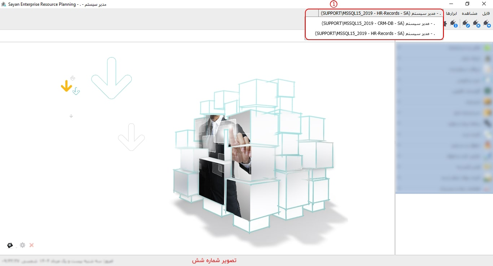

پس از ایجاد ارتباط با پایگاه داده و ورود به نرم افزار صفحه ی زیر را مشاهده کنید:
برای ادامه مطلب به تصویر شماره دو مراجعه نمایید.
 قطع ارتباط جاری (Ctrl + D) :
این ابزار برای قطع ارتباط با پایگاه
داده جاری و نرم افزار مهیا شده و
برای انجام کار با نرم افزار و پایگاه داده مورد نظر
لازم است دوباره با آن ارتباط برقرار کنیم.
قطع ارتباط جاری (Ctrl + D) :
این ابزار برای قطع ارتباط با پایگاه
داده جاری و نرم افزار مهیا شده و
برای انجام کار با نرم افزار و پایگاه داده مورد نظر
لازم است دوباره با آن ارتباط برقرار کنیم.
 بازسازی ارتباط جاری (Ctrl + R) :
شما می توانید زمانی که تغییراتی در نرم افزار ایجاد شده، آن را بازسازی (Refresh) نمایید.
لازم به توضیح است که «بازسازی ارتباط جاری» در صفحات
در حال اجرا تغییرات را نمایش نمی دهد. برای مشاهده تغییرات، لطفا
پنجره های موردنظر را بسته و مجددا آنها را اجرا نمایید.
بازسازی ارتباط جاری (Ctrl + R) :
شما می توانید زمانی که تغییراتی در نرم افزار ایجاد شده، آن را بازسازی (Refresh) نمایید.
لازم به توضیح است که «بازسازی ارتباط جاری» در صفحات
در حال اجرا تغییرات را نمایش نمی دهد. برای مشاهده تغییرات، لطفا
پنجره های موردنظر را بسته و مجددا آنها را اجرا نمایید.
 مدیریت سرور:
توضیحات مرتبط پیشتر ارائه گردیده است.
مدیریت سرور:
توضیحات مرتبط پیشتر ارائه گردیده است.
 تنظیمات:
با کلیک روی این گزینه صفحه
تنظیمات نمایش داده می شود توضیحات مربوط به
ابزار در قسمت راهنمای
صفحه شروع پیشتر توضیح داده شده است.
در صورت نیاز به این صفحه مراجعه کنید.
تنظیمات:
با کلیک روی این گزینه صفحه
تنظیمات نمایش داده می شود توضیحات مربوط به
ابزار در قسمت راهنمای
صفحه شروع پیشتر توضیح داده شده است.
در صورت نیاز به این صفحه مراجعه کنید.
 پشتیبان گیری:
به وسیله این گزینه فراهم شده است.امکان تهیه پشتیبان از اطلاعات پایگاه داده
برای تنظیم مسیر ذخیره سازی فایل پشتیبان صفحه ی
مدیریت سرور را مطالعه فرمایید.
پشتیبان گیری:
به وسیله این گزینه فراهم شده است.امکان تهیه پشتیبان از اطلاعات پایگاه داده
برای تنظیم مسیر ذخیره سازی فایل پشتیبان صفحه ی
مدیریت سرور را مطالعه فرمایید.
 بستن صفحه (Ctrl + Q)/ خروج :
هر فرمی که در
نرم افزار در حال اجرا و نمایش است با کلیک روی گزینه
«بستن صفحه » ببندید.علاوه بر آن باکلیک روی گزینه خروج نیز از
نرم افزار خارج می شوید.
بستن صفحه (Ctrl + Q)/ خروج :
هر فرمی که در
نرم افزار در حال اجرا و نمایش است با کلیک روی گزینه
«بستن صفحه » ببندید.علاوه بر آن باکلیک روی گزینه خروج نیز از
نرم افزار خارج می شوید.
این منو در کنار منوی فایل قرار دارد و دارای گزینه های ذیل می باشد:

 صفحه شروع (Ctrl + H) :
این گزینه به شما امکان نمایش صفحه «شروع نرم افزار» را می دهد.
صفحه شروع (Ctrl + H) :
این گزینه به شما امکان نمایش صفحه «شروع نرم افزار» را می دهد.
 راهنما :
در هر بخشی از نرم افزار با کلیک بر روی این گزینه
امکان استفاده از ابزارهای مربوط به آن به تفصیل توضیح داده شده است.
راهنما :
در هر بخشی از نرم افزار با کلیک بر روی این گزینه
امکان استفاده از ابزارهای مربوط به آن به تفصیل توضیح داده شده است.

برو به صفحه بعد (Alt + Right) :
در صورتی که چندین صفحه در نرم افزار به صورت تب در(Tab) حال اجراست، به کمک این گزینه می توانید صفحات را از راست به چپ مشاهده نمایید.

/ برو به صفحه قبل (Alt + Left) :
در صورتی که چندین صفحه در نرم افزار به صورت تب (Tab)در حال اجراست، شما می توانید، به کمک این گزینه صفحات را از چپ به راست مشاهده نمایید.
 نمایش تمام صفحه (Ctrl + F) :
زمانی که صفحه ای از نرم افزار
در حال اجراست، شما می توانید با کمک ابزار «تمام صفحه »
صفحه مورد نظر را به صورت کامل مشاهده نمایید.
مادامی که صفحه ای از نرم افزار در حال اجراست، این صفحه به صورت تب (Tab)
در صفحه اصلی نرم افزار قابل مشاهده می باشد.
نمایش تمام صفحه (Ctrl + F) :
زمانی که صفحه ای از نرم افزار
در حال اجراست، شما می توانید با کمک ابزار «تمام صفحه »
صفحه مورد نظر را به صورت کامل مشاهده نمایید.
مادامی که صفحه ای از نرم افزار در حال اجراست، این صفحه به صورت تب (Tab)
در صفحه اصلی نرم افزار قابل مشاهده می باشد.
همانگونه که در تصویر فوق مشاهده می کنید
صفحه ی شروع به صورت یک تب در صفحه ی نرم
افزار نشان داده شده است. با انتخاب
نمایش تمام صفحه از منوی نمایش یا زدن علامت
در تصویر ، می توانید صفحه ی مورد نظر را
به صورت پنجره ای جداگانه مشاهده نمایید.
نمایش تمام صفحه ی تب نشان داده شده در تصویر زیر آمده است. روی تصویر با فلش مشخص شده است که در صورت کلیک روی این ناحیه از پنجره، تصویر صفحه به حالت قبل باز می گردد.

برای ادامه مطلب به تصویر شماره چهار مراجعه نمایید.

-ابزارها(کادر شماره یک):
-راس گیری ctrl
برای ادامه مطلب به تصویر شماره پنج مراجعه نمایید.

-تاریخ مبدا (کادر شماره یک):
-کادر شماره دو:
-کادر شماره سه:
-کادر شماره چهار:
برای ادامه مطلب به تصویر شماره شش مراجعه نمایید.

-کادر شماره یک:
برای ادامه مطلب به تصویر شماره هفت مراجعه نمایید.